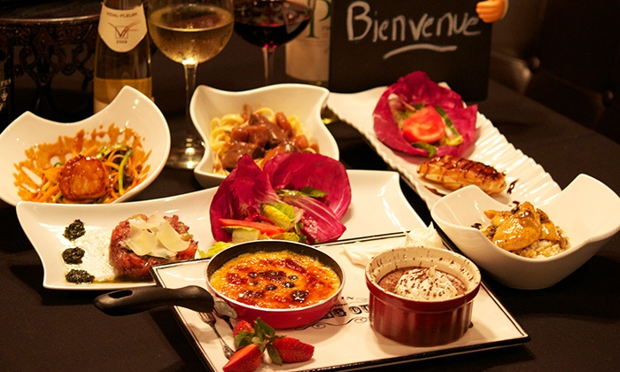

Home
Japan
▼
✈ Overview
✈ Cuisine
✈ Points of Interest
Korea
▼
✈ Overview
✈ Cuisine
✈ Points of Interest
Italy
▼
✈ Overview
✈ Cuisine
✈ Points of Interest
France
▼
✈ Overview
✈ Cuisine
✈ Points of Interest
Contact
About
France's Cuisine
French cuisine is seen as fancy, expensive, and sophisticated. It is an influence to many other cuisines. “French cuisine is a unique,
cultural experience that melds flavorful, nutritious foods with beauty, leisure, and therapeutic preparation.”
Meal
Food
Picture
Breakfast
Coffee
Croissant
Baguette
Fruit
Jam
Lunch
Salad
Soup
Meat/Fish
Pasta
Rice
Potatoes
Dinner
Bisque
Streak Frites
Baguettes
Foie Gras
Pot au Feu
Wine

Dessert
Fruit Tart
Creme Caramel
Macaron
Éclair
Crepe
Ice Cream